Mercurialis Inc.
"When reality can't keep up — dare to dream."


Thank you for stopping by. This is the history of Mercurialis Inc. as best as we can piece it together. More than twenty years of stories, from a small corporation founded during the EVE Online beta to wherever we are today. Some of it comes from old forum posts and DOTLAN records, some from screenshots, and a lot from memory.
It is not a complete record, and it may never be. This timeline is meant to grow as new pieces turn up. If you have a story, a screenshot, a video, or a killmail that belongs here, I'd like to hear it. Reach out at TheMercurialisInc@pm.me, and we'll add it with credit.
Every pilot who flew under this banner is part of what Mercurialis Inc. became. This is your history too. Thank you for being part of it.
RVAMitchell, CEO, Mercurialis Inc.
± MINC Through The Years


2002
Mercurialis Inc. was founded by Isayo Arkindra on October 28, 2002, during EVE Online's closed beta period, as a player-run corporation. The corporation started as a small group of players in beta, and carried that core into the full launch of the game.
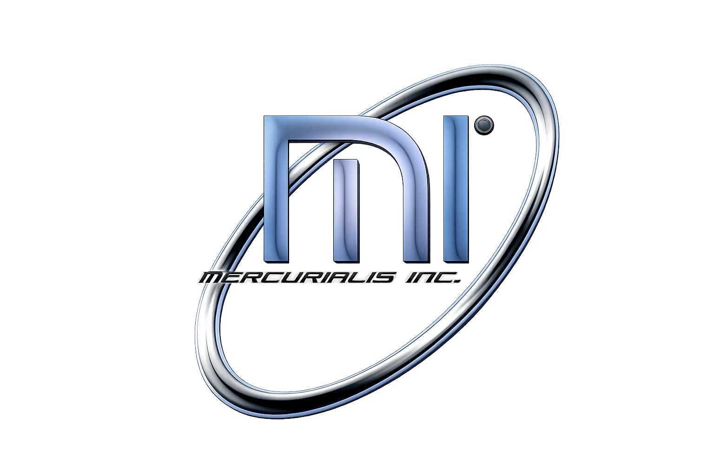
MINC's original corp insignia, from the corporation's earliest days.
2003
EVE Online officially launched on May 6, 2003. The launch came with a full server wipe and all assets, ISK, and progress from the beta were reset.
That same year, MINC earns a mention in the official Prima strategy guide for EVE Online, one of the corp's first pieces of real-world print coverage.
2004
Alliances weren't a formal game feature yet, so most of this is reconstructed from old forum posts. During this time, MINC was part of Star Alliance, a player-organized agreement between corporations operating outside formal game structures. On October 26th, CEO Isayo Arkindra announced MINC's departure from Star Alliance via the EVE Online forums.
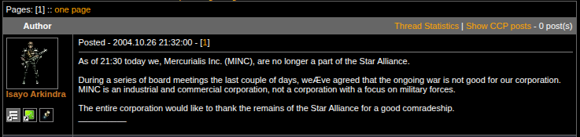
Source: EVE Online forums, Oct 26 2004
2005
MINC joins its first official in-game alliance, Interstellar Alcohol Conglomerate (IAC), and establishes operations in Catch. IAC brought together European and American players under a strong shared culture, and MINC became part of one of nullsec's early communities. At the time, the corp ran roughly twenty active pilots.
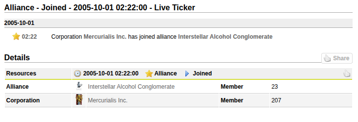
Source: DOTLAN EveMaps
2006
MINC settles into life in Catch under IAC. Roaming ops, small-gang fights, and the day-to-day grind of early nullsec fill the corp's logs. MINC also produced short videos throughout the year documenting fleet operations, one-on-one tourneys, and life in IAC space.
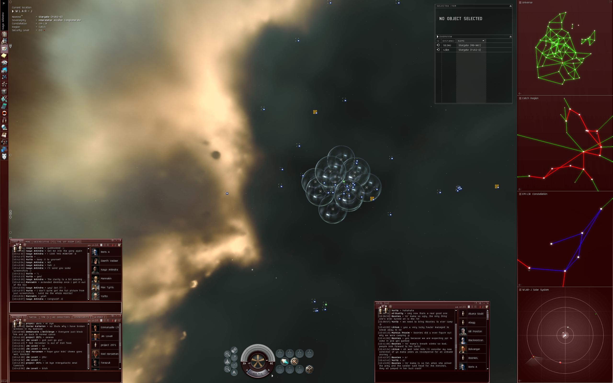
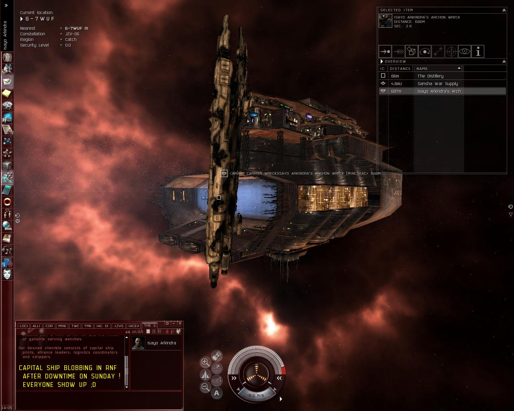
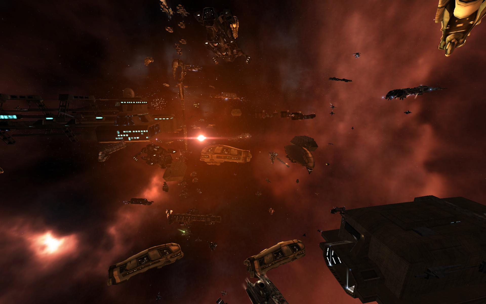
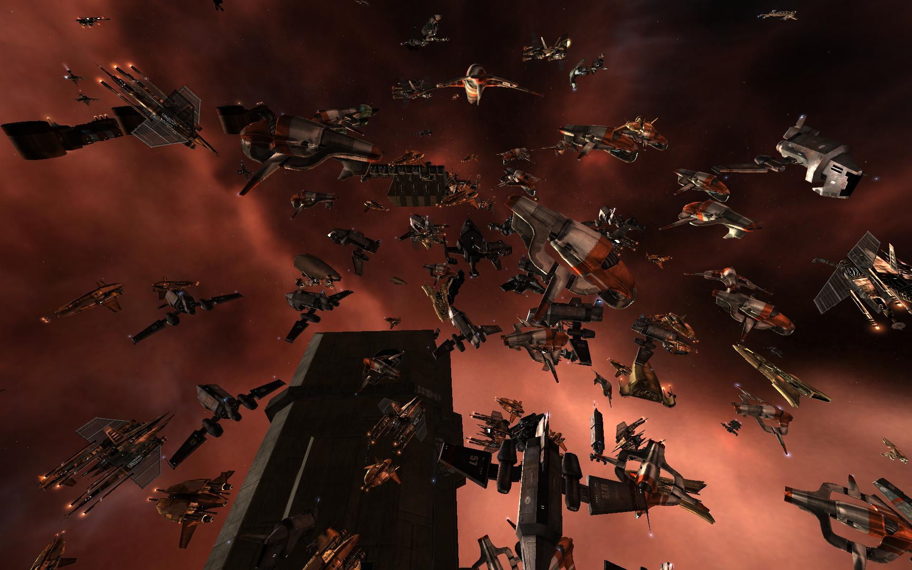
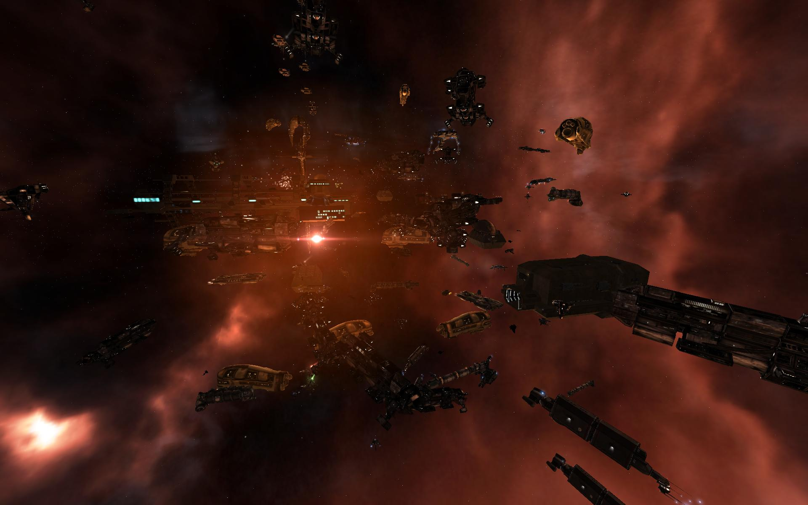
Screenshots courtesy of Eve-Files by Cribba.


Videos originally hosted on Eve-Files by Cribba. Archived on YouTube.
2007
Life in IAC was good. With hostile staging nearby in Querious, roaming and small-scale fights were a regular thing and usually more about making content than winning wars.
One engagement became legendary for being completely absurd: after a long stretch of provoking an enemy station, MINC and its allies turned the whole thing into a conga line the moment the opposition finally undocked.

MINC and its allies break into an impromptu conga line the moment the enemy fleet finally undocks. Footage courtesy of Ha Chu.
EVE Fanfest 2007
Reykjavik, IcelandThat year, several MINC members made the trip to Fanfest in Iceland. Isayo Arkindra, Thundirr, Mannakin, and others shared a table with the Goons, in-game rivals but friendly in person IAC was proudly repped, beer-bottle-cat logo and all.
 Isayo Arkindra
Isayo Arkindra Tuborg
Tuborg ThundirrTuborg
ThundirrTuborg MannakinTuborg
MannakinTuborg Ha ChuTuborg
Ha ChuTuborg


Videos originally hosted on Eve-Files by Cribba. Archived on YouTube.
2008
MINC's history earns it a spot in the Guinness World Records Gamer's Edition 2008, listed as EVE Online's Oldest Player Corporation:
"Oldest Player Corporation
Mercurialis Inc. was established on 28 October 2002, prior to the game's release. As of September 2007 it had 51 members, with the player Isayo Arkindra acting as leader or CEO. It is currently a member of the Interstellar Alcohol Conglomerate Alliance."
MINC builds its first outpost, MINC Delirium, in RNF-YH (Catch).

Source: DOTLAN EveMaps
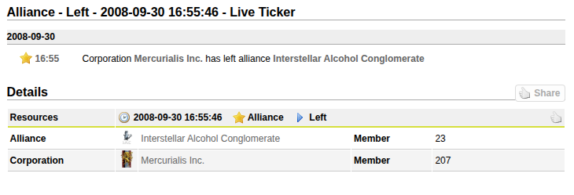
Source: DOTLAN EveMaps
Against All Authorities (AAA) soon brought superior numbers to bear and pushed IAC out of the region. MINC took real losses in the fighting; two motherships and the corp's Ragnarok.
With IAC's hold on Catch broken, MINC left the alliance and joined Wildly Inappropriate.
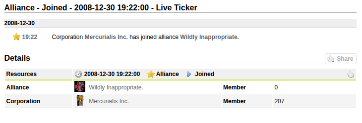
Source: DOTLAN EveMaps
2009
MINC keeps expanding in nullsec, building its second station, MINC Aberration, in C-4ZOS, Branch.

Source: DOTLAN EveMaps
Capital Defense - K25-XD
June 2009In June 2009, Solar Fleet launched a major assault on K25-XD, the station system at the heart of Wildly Inappropriate's Geminate holdings and MINC's home territory.
It grew into one of the largest capital fights of the era, with Wildly Inappropriate, The Initiative, and Majesta Empire defending against the offensive. After the opening doomsdays and capital deployments, reinforcements poured in and the fight turned into a massive clash of opposing capital fleets.
Later in the year a MINC titan is lost, documented on the EVE Online forums.
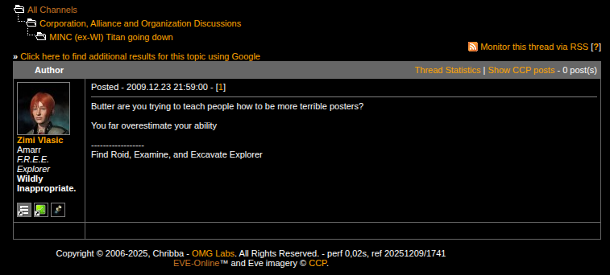
Source: EVE Online forums, Dec 23 2009
2010
MINC's time in Aberration ended with a defeat by Looney Toons, and the corp left Wildly Inappropriate.
MINC then joined Razor Alliance, which became home for the next six years. After years of regional churn, Razor offered stability and put MINC alongside some of the largest northern coalitions of the era.
Around the same time, the founding CEO Isayo Arkindra stepped down and named xMillz as his successor.
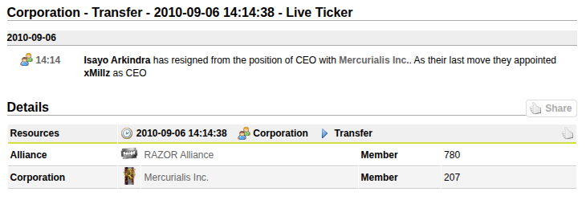
Source: DOTLAN EveMaps
2011
MINC went into 2011 as part of Razor Alliance, in the middle of one of the most intense stretches of nullsec warfare in EVE history.
Battle of Uemon
February 14, 2011On February 14th, the Battle of Uemon became one of the largest supercapital fights of its era: a brutal titan slugfest between the Northern Coalition and a combined Eastern bloc.
The Northern Coalition, including Razor Alliance, commits 18 titans, 45 supercarriers, and 121 capital ships against a combined Eastern bloc force of Red Alliance, White Noise, Solar Fleet, Raiden, and Legion of xXDeathXx fielding 14 titans, 85 supercarriers, and 38 capital ships. By the end, 12 titans are destroyed, tying a record that stands until B-R5RB three years later.
 Jacob Warden
Jacob Warden Grico3
Grico3 Grumber1
Grumber1 yitzy
yitzy Voloses
VolosesOnly weeks later, Rich DK loses his Nyx supercarrier in Sendaya, caught on the way back from an op. It doesn't change a thing and MINC keeps throwing supers around New Eden.
Battle of O2O
March 17 - 20, 2011In March, the Battle of O2O-2X followed, again bringing enormous supercapital fleets into conflict.
Twelve titans are destroyed, matching Uemon's record. Uemon and O2O were the high-water mark of Northern Coalition power, right before it began to fall apart.
battle report Mar 17 ↗ battle report Mar 18 ↗ battle report Mar 20 ↗
Jacob Warden Danbar Roth
Danbar Roth Fenix Rebirth
Fenix Rebirth Sovox
Sovox Heljareldur
Heljareldur QiciaVoloses
QiciaVoloses Kieselguhr Kidyitzy
Kieselguhr Kidyitzy CoritharGrico3
CoritharGrico3 Flatliner 111
Flatliner 111 DrakusDanbar Roth
DrakusDanbar Roth Piglett
Piglett Duncan007
Duncan007By June, the Drone Russian Federation offensive breaks through the Northern Coalition's defenses. Jump bridge networks fall, alliances start losing territory, and the north slides into chaos. Razor eventually pulls out of the north, closing a stretch of warfare that put MINC in some of the largest capital battles in EVE history.
Around this time, MINC also runs a Titans and Supercarriers class for EVE University, covering capital mechanics and fleet operations.
2012
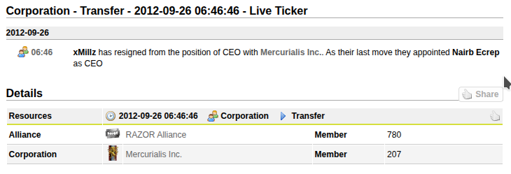
Source: DOTLAN EveMaps
xMillz leaves the game and hands the CEO title to Nairb Ecrep, but keeps his corporation shares. During the Razor period, MINC takes the outpost in P-E (Geminate) and names it De Ja Vu. The corp keeps operating in the northern regions as part of Razor.
2013
In 2013, MINC keeps building out its industrial side, including a public capital ship production program. Run by Tiberu Stundrif, it sold carrier hulls straight to the open market.

EVE Online forums, July 12 2013
Battle of Asakai
January 27, 2013At the Battle of Asakai in January 2013, a single fumbled titan jump spirals into a massive fight between the CFC and HoneyBadger Coalition. Over 3,000 pilots pour in, the battle runs nearly six hours, and losses top 700 billion ISK, one of the first supercapital brawls to break out into mainstream gaming media.
MINC committed supercarriers, battleships, and interdictors to the battle.
 Dobriy
Dobriy wifi
wifi Nimkando Hapkido
Nimkando Hapkido Death Vixxen
Death Vixxen Rancid Bunny
Rancid Bunny Menaiya Zamayid
Menaiya Zamayid ScabRunnerFlatliner 111
ScabRunnerFlatliner 111 Morphius1280
Morphius1280 Treyah
TreyahMINC BBQ
2013MINC members got together in person for a corp BBQ, trading the usual spreadsheets and fleet pings for grills and Quafe.*
Primus Buck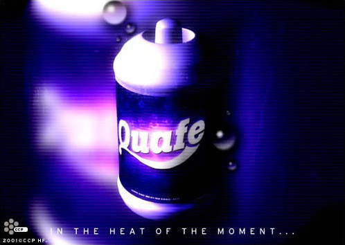
Quafe Hao WuQuafe
Hao WuQuafe* If you were there and have names, photos, or stories to add, let us know in MINC BAR.
2014
Bloodbath of B-R5RB
January 27, 2014On January 27, 2014, exactly one year after Asakai, the sovereignty bill for B-R5RB in Immensea goes unpaid. The system drops vulnerable, N3/PL moves to reinforce it, and the CFC and Russian coalitions answer in force. What follows is the largest and most destructive battle in gaming history to that point: over 7,500 players, 21 hours of continuous fighting, and 75 titans destroyed alongside dozens of supercarriers. Total losses pass 11 trillion ISK, roughly $300,000 USD in real money. The battle makes international news and seals EVE's reputation for warfare on a scale nothing else touches.
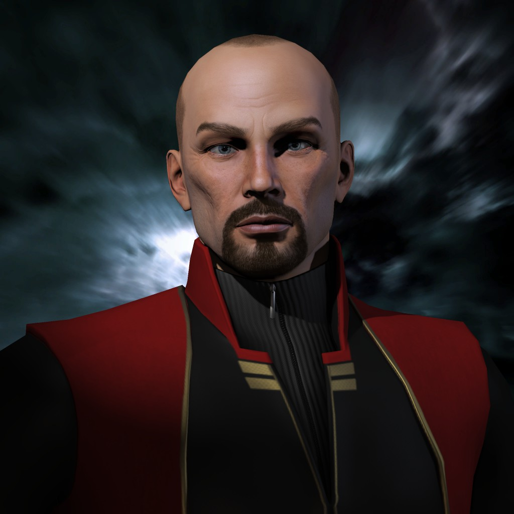
Adaram Kori'nh Admiral Brian
Admiral Brian Aleph Gideon
Aleph Gideon Arbalesttom
Arbalesttom Auldare
Auldare Ben McRock
Ben McRock Billa Clack
Billa Clack Borakh Tieberius
Borakh Tieberius Bratan Juzik
Bratan Juzik Bruce McFoster
Bruce McFoster ByteMan
ByteMan Chaosstation
Chaosstation Jade Ro
Jade Ro Karl Mason
Karl Mason Kostya Semer
Kostya Semer Mantroxmarly cortez
Mantroxmarly cortez Psyentific
Psyentific Purpleshadez
Purpleshadez Roel Yento
Roel Yento sollit dude
sollit dude Tromin
Tromin Waldemar Wexler
Waldemar Wexler Agaetis Byrjun Endalaust
Agaetis Byrjun Endalaust
2015
After years of growth inside Razor Alliance, MINC enters 2015 facing a crisis from within.
CEO Nairb Ecrep goes inactive, leaving the corp without leadership and its future uncertain. The directorate starts preparing for a handover, but runs straight into the ownership problem: former CEO xMillz still holds the shares needed to appoint a new leader, and without them the directors can't name a CEO or take full control of MINC's assets. Among those assets is the corp's collection of supercapital blueprints, years of investment.
Asked to hand over control, xMillz doesn't simply return the shares. He demands a ransom for the corp's future: the contents of MINC's wallet and its entire collection of supercapital BPOs, all held in his alt corp.
It's an impossible choice. Losing the assets would cripple the corp; refusing would risk losing MINC entirely. Reluctantly, the directorate pays.
marly cortez takes over as CEO and immediately starts rebuilding. With backing from Razor leadership, including Rich DK, MINC claws its way back from the brink. It's one of the clearest examples of what MINC is: not a corp that collapses, but one that keeps surviving things that would end most others.
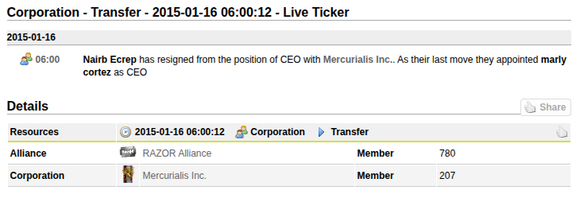
Source: DOTLAN EveMaps
2016
As the decision lands to leave Razor, the directorate weighs its options. Goonswarm Federation looks viable, but the read is that it's an endgame move, that Goonswarm's stability and safety, appealing as they are, might breed complacency and a slow fade into irrelevance.
Instead, the corp joins The Bastion, a newer Imperium alliance that offers security and still has room to grow.
Source: DOTLAN EveMaps
Shortly after, the Casino War erupts. A coalition of Imperium enemies, bankrolled by wealthy EVE gambling-site operators, assembles the largest military mobilization the game has seen in years. The Moneybadger Coalition drives the Imperium out of the north, system by system. MINC fights the whole campaign, the evacuation and the long retreat south to Delve.
During the Bastion period, Belegvaethor posts a recruitment call on the EVE Online forums.
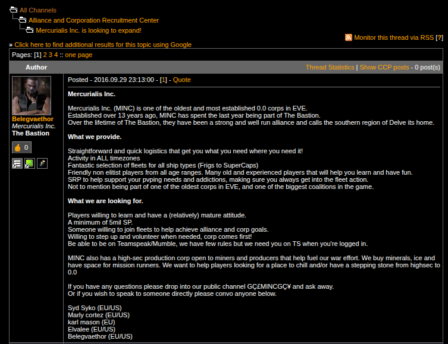
Source: EVE Online forums, Sep 29 2016
2017
After the Casino War, the Imperium rebuilds in Delve. MINC settles into 7UTB and makes itself at home. This is the height of the Rorqual mining age, fleets of Rorquals blanket the anoms, super-ratting in ring sanctums is routine, and the industrial pipeline runs at full tilt. At its peak the corp has multiple titans and supercarriers in production at once. The kind of wealth that quietly funds everything that comes next.
marly cortez weighs in on the citadel era on the EVE Online forums.
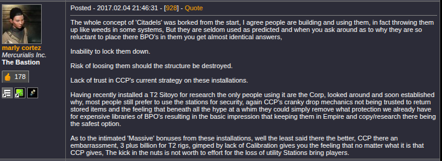
Source: EVE Online forums, Feb 4 2017
7UTB Industrial Operations2018
In 2018, marly cortez steps down as CEO and hands the reins to Primus Buck. MINC participates in Imperium deployments through the year.
Battle of X47L-Q
August 8, 2018On August 8, 2018, the Imperial Legacy coalition assaults a Northern Coalition Keepstar in X47L-Q, Pure Blind. The fight draws 6,270 pilots, one of the largest battles of the war though short of B-R5RB's headcount. Both sides commit staggering supercapital forces: over 540 titans and 510 supercarriers hit the grid.
The battle rages for hours under heavy time dilation. The attackers break the Keepstar's armor, with total losses around 10 trillion ISK. Both coalitions are fielding titan fleets that surpase what either side brought to B-R5RB four years earlier.
 Rox EvechanKarl MasonMannakinQicia
Rox EvechanKarl MasonMannakinQiciaIn November, MINC anchors its own Fortizar and Athanors in ZTS-4D, standing up a private mining-and-industry pocket outside the Imperium supercapital umbrella, and starting a pattern it later repeats in Efa, RNF, and elsewhere.
Moving into ZTS-4D
Spanked by Inner Hell - ZTS-4D
December 2018"That's a lot of Leshaks."
During the op, a wormhole spawns in system. The call goes out on comms, "plus one", followed by some misplaced confidence that we could take them. Then the boogeymen came. Inner Hell ran a textbook rage-rolling ambush, dropping seven Leshaks alongside a fleet of Lokis, Bhaalgorns, and an Alliance Tournament prize ship, the Fiend. We lost three Rorquals, two Chimeras, and a Nidhoggur, though a FAX and the subcap fleet got out clean.
 MINC
MINC Inner Hell
Inner HellInto early 2019, in the campaign's final months:
ZTS-4D RVAMitchell's Hel


ZTS-4D Moon Ops - Feb 2019


ZTS-4D Last Mining Op - Mar 23 2019


ZTS-4D was an expensive lesson in not over-committing caps to an undefended pocket, but it proved the corp could stand on its own outside the alliance safety net. MINC wrapped up operations there in early 2019.
2019
The ZTS pocket gets cut short when The Bastion relocates to Fountain, in O-PNSN, in early 2019. The corp is barred from renting ZTS from the alliance, so MINC follows The Bastion into O-P, where the alliance builds a new home.
A mid-year war deployment sours morale badly enough that one director unsubs over it, and the corp flip-flops its staging between O-PNSN and 7UTB. Even so, the back half of 2019 is a genuine growth stretch: more corps engaging, real response fleets forming, a wormhole operation standing up, and BLOPS harassment campaigns running into the north.
Late 2019 brings the first serious talk of leaving The Bastion. The alliance feels less like a fighting outfit and more like a retirement home, like being second-class citizens in the Imperium. The idea gets raised, kicked around, and ultimately shelved.
This is a Personal after action account of the battle of 15w-GC. Its all wrong. Hate mail can be sent to Draco Beleren in game.
It's a beautiful Sunday. The Wife kisses me goodbye. She heads off to work while I sit at home in my underwear and play video games. I cop a feel and send her on her way. Lumbering over to my chair, I fire up the ol' battle station. It's time to play some internet spaceships!
Ping! Let's shoot some structures ladies. I've got some glassing to do and you are just the scrubs to do it. Form up in Baltecs and let's do this thing. (Obviously not named after the disastrous Russian Battleship fleet summarily destroyed by the Japanese in 1905). I grab the most expensive megathron on contracts and join the fleet sucksass. Newish FC, sounds excited to be reffing some reffable rubbish.
2020
On May 11, MINC formally deploys with the Goon Expeditionary Force (GEF), putting the corp on a war footing two months before WWB2 officially opens. Weeks later, on June 10, GEF gets a preview of what's coming: a massive dread brawl at Nennamial. Only two MINC pilots are on the field, but one of them doesn't come home.
On June 29, with war imminent, leadership sends the order: pull everything out of forward space. Cap pilots, get your titans, supers, dreads, and FAXes staged and ready.
World War Bee 2 erupts across New Eden as the Imperium faces PAPI, PandaFam, Legacy Coalition, a coalition of enemies assembled with one goal: destroy Goonswarm Federation. As the war kicks off mid-year, MINC evacuates Fountain. Leadership calls it an indefensible floodplain and ends the endless shuffle between regions for good. They fall back to Delve and 1DQ.
Defending Imperium space breeds real frustration. By October, leadership is floating the idea of joining Goonswarm directly, partly for wartime SRP access, partly for longer-term stability. It's shelved for now, but it's another time leaving gets seriously considered.
Instead of melting into the Imperium fleet blobs, MINC takes a different path: it forms a Special Interest Group, a volunteer outfit built to do disproportionate damage with small numbers. With TEST Alliance's home region of Esoteria left thin, the majority of their pilots now concentrated in Delve, MINC deploys to Stain, the NPC space on Esoteria's border.
Ugh… I've been sitting in this chair since 8:00am. I've already done 3 fleets today and we just had a big fight. Maybe I'll just go lay down before the kids come home… Ping... Jackdaws… uuurrrrggggghhhhh. Peacetime? Fuck all that noise I'm going to get a cookie.
Some rando in alliance chat: For anyone deployed we need more ships. Sounds like were gonna get a fight.
You son of a bitch I'm In. What's one more fleet? The Wifey isn't home yet. These fleets are pretty quick. Maybe I'll get to shoot something.
FC calls for undock and we're off… to sit outside the station. 15 minutes go by and FC is still kicking drakes out of the fleet. Couple more minutes and we're finally flying through space.
The Bastion moves early. By the first week of August the alliance isn't raiding; it's building behind enemy lines. The Imperium floods northern Esoteria with structures, a deliberate beachhead of citadels planted across TEST's home region. The timing matters: this happens right before CCP introduces structure cores, a mechanic that would have made that kind of mass fortification far more costly. A deal with the Stain locals provides staging; HT4K becomes the forward base.
On September 5, Delta Squad is formally stood up. Led by Qicia, RVAMitchell, and Khronos, the doctrine is asymmetric: no FC required, 24/7 entosis and structure pings, forcing TEST to constantly pull fleets off the front to defend Esoteria. Every ping answered in the south is one fewer defender at 1DQ. The DTEKF IHUB kill froze two titan builds in their Sotiyo, and the Sotiyo itself would follow.
Esoteria is the main effort, but it isn't the only one. Not everyone can make the deep behind-enemy-lines ops, and plenty of people just like being in the big fights, so MINC keeps feeding pilots into Imperium mainline fleets back home the whole time. Most do both. The bulk of the corp's energy goes south to Esoteria, but when the Imperium forms for the war-defining fights in Delve, MINC is on those grids too.


Delta Squad drops carriers on an Esoteria mining fleet. With TEST's home region thinly defended and most of their pilots committed to Delve, Delta Squad kept hunting ratters and miners to keep TEST constantly reacting to threats in their own backyard.

Forward carrier deployment in Esoteria on December 30, 2020; the same day M2-XFE was erupting in Delve. While the largest battle in gaming history was unfolding a few regions over, Delta Squad was still running ops in TEST's backyard. Carriers provided heavy strike capability and on-grid support for structure operations throughout the campaign.
It's 3am the night before. I'm exhausted from a night of grinding isk for our master Mittens al gul. Spikey McFireface task master, has had us working hard in the forges of delve. I lay in my bed eagerly awaiting the battle. I had received no less than 20 pings and 15 pongs about 49-u. #Bossbabe had even called me personally to tell me to be there.
7:30 Am rolls around and I'm sitting in my sweaty chair ready for another zoom meeting. It's awful as usual, but I'm getting pretty good at dual boxing Eve and triple boxing comms. I'm really hoping it was the Trig discord that heard me flush and not my work.
Fury at FWST-8
October 5, 2020In October 2020, PAPI pushes into Imperium space and tries to anchor a Keepstar in FWST-8. The Imperium repels attempt after attempt, killing PAPI Keepstars before they can online. On October 5, PAPI pulls a controversial move: bubble-wrapping the anchoring Keepstar, surrounding it with their own ships and warp disruption bubbles so the Imperium can't target it, and forces the anchoring timer through. The Imperium forms to contest it anyway. Over 8,800 pilots pour into the system, shattering every prior record and earning a Guinness World Record for the largest PvP battle in gaming history. The server buckles under the load, sitting at 10% time dilation for most of the fight. It runs over 14 hours, with losses past 23 trillion ISK.
MINC deploys subcapitals, carriers, and dreadnoughts throughout the engagement.
 Belegvaethor
Belegvaethor Pendu PadecainRVAMitchell
Pendu PadecainRVAMitchell Draco Beleren
Draco Beleren Mystic Siren
Mystic Siren


{kind=link}
{kind=link}
{kind=link}
So how about that fight space nerds? Assume -9 GMT time zones. (DT is at 3am.) I name drop people who I've never talked to and think I'm an idiot. No Hamsters were harmed in the writing of this report.
On Sunday night, after about 8 hours of bitching about my high sec trig rewards again, I decide it's time to log out for the evening… even though I was at 2.98 the night before we got our rewards…. No warning!
My wife gives me the look. It's about Midnight. I think I'm about to get lucky, even get a good night sleep for the first night in a week. I was Wrong! Wrong on all accounts!!!
I woke up too early. I missed all the pings for the first fight. I had an existential crisis while watching my coffee machine screech and hiss at me like a raccoon. Didn't get laid, wife made fun of me because my favorite metal song is about a papaya fruit.
Massacre at M2-XFE
December 30, 2020 – January 2021The night before the battle, a MINC-led interceptor fleet spends five hours dragging PAPI's head FC Villy across node after node in DTEX8, running him ragged as he chases our very mobile fleet through an entosis fight. His exhaustion from that ordeal is later credited as a factor in the decision-making behind PAPI's catastrophe the next day.
On December 30, 2020, PAPI moves to destroy an Imperium Keepstar in M2-XFE. The Imperium baits them into committing their entire titan fleet, then drops its own supercapital armada. A server error loads hundreds of PAPI titans into the system late, stranding them without support, and the Imperium begins a methodical slaughter. Over the following month, PAPI mounts extraction attempt after extraction attempt to save the trapped fleet, each one bleeding more losses. Across the whole M2-XFE campaign the Imperium destroys 257 titans, the most destructive series of engagements in EVE history, with total losses past 13 trillion ISK. It breaks PAPI's momentum and marks the beginning of the end of their invasion.
MINC deploys supercarriers and a titan across multiple battles during the M2-XFE battles.
Mystic SirenRVAMitchell Vixen NyssaKarl MasonDraco Beleren
Vixen NyssaKarl MasonDraco BelerenPreamble: I've been playing this game since 2007. I've been able to kill a couple titans in my time. I was in the fight at KVN, I was in the fight on every Keepstar in Fountain. We defended our home and Lost. I was there, losing dreads trying to kill keepstars in NPC delve. In the last 3 days, I have witnessed more destruction than I thought possible. I wrote my first AAR about killing a single titan in May. It was exciting. This… woah boy. I should also warn you this isn't a neutral post. Assume -9 GMT time zones. (DT is at 3am.) I name drop people who I've never talked to. No Hamsters were harmed in the writing of this report.
It's Wednesday. I'm in the same zoom meeting I've been in since April. I'm drinking the same stale coffee and if the temperature outside gets any colder it won't matter if its freedom units or Communist propaganda units.
Into January 2021, the campaign carries on:

Delta Squad carrier drop staged out of black ops, January 31, 2021.
2021
On January 21, Minc-chan, the corp mascot, is introduced to the membership.
The deployment carries into 2021. After repeated tries, TEST finally kills MINC's HT4K staging Fortizar, but losing the base doesn't end the campaign. MINC just sets up new forward positions across Esoteria and keeps going.
We stay mobile, pick off soft systems, and live off looted TEST assets, which is what keeps the whole thing paying for itself so far from Delve.
January through March 2021 is the campaign's peak. The timer board runs nightly: Ansiblex gates, Fortizars, Tataras, and IHUBs across Esoteria cycle through the target list. The crown jewels land in late January and February: a 364B ISK Sotiyo in D-FVI7 and an 80B ISK Sotiyo in VL7-60, the biggest kills of the entire deployment.

The 364B ISK Sotiyo goes down in D-FVI7, the biggest single kill of the Esoteria deployment.

Qicia's Leshak fleet on operation during the Esoteria campaign.

Interdictor pilot POV from a skirmish in CR-0E5, fleets were run frequently and Delta Squad was regularly forcing TEST to pull defense fleets off the main front.

MINC hot drops a Mangonel gang alongside FERRA, March 23, 2021.
In April, mid-war, the Pochven SIG stands up, bringing in side income running Observatory Flashpoints.
Then, unexpectedly, PAPI begins to unanchor. On August 16, week 58 of the war, MINC is on grid for the kill of the T5Z Keepstar.
The war ends in August the way EVE wars usually do: not with a final battle but with the attackers walking away. For over a year PAPI had one goal, destroy the Imperium, and by summer they'd taken Fountain, Querious, Period Basis, and most of Delve, squeezing the Imperium down to a single fortified pocket around 1DQ. After M2-XFE killed PAPI's appetite for another all-in titan fight, PAPI ran out of ways to finish the job, and the will to keep trying went with it. In early August they announced the invasion had failed and pulled out. MINC had spent the whole war working both ends of it, grinding TEST down in Esoteria and standing on the mainline grids in Delve, and both mattered. The corp returns to Delve, and attention turns back to Fountain.
Source: DOTLAN EveMaps
Primus Buck steps down as CEO and hands off to Khronos Thellere.
The back half of 2021 sinks into post-war malaise. CCP's scarcity era has thinned the economy, and a real resentment settles in: the corps that did the most during the war got the least recognition for it. The Pochven SIG, already running since April, accelerates as the main outlet for content while leadership figures out what comes next.
In late December, MINC absorbs X-Alpha (XALFA) in a friendly arrangement that brings in new pilots and pushes Matt Falahe and Almalexia Vivekosia up to the directorate. By the end of the year the corp has the people and the income; it just needs the direction.
2022
In February, the Delta Squad deployment is called off. The hunting op, which revived the Delta Squad name from the 2020 Esoteria campaign for a new small-gang operation, had run since shortly after the new year began; participation never hit what leadership hoped for, and the people who kept it going were recognized as it wound down. Short-lived, but it proved the appetite was there.
Delta Squad Deployment, Early 2022
The last Delta Squad deployment, start to finish.
Leaving The Bastion, February to March 2022MINC didn't want to leave The Bastion. When the corp joined in 2016, nobody mistook it for the Imperium's premier PvP alliance; it was the quieter corner of the coalition, a place small enough that a corporation could matter instead of vanishing into a bloc. That was the appeal.
World War Bee changed the math. For most of the war MINC carried The Bastion's forward campaign, running Delta Squad's campaign in Esoteria for nearly a year, the longest sustained forward deployment by any Bastion corp, tying down TEST and pulling fleets off Delve. When the war ended, that effort counted for almost nothing. Recognition flowed to people who'd spent the war elsewhere, and the corps that had actually carried the fighting were told to move on.
Over the next several months trust in the alliance steadily eroded: the moon rental program got openly called a scam, corps including MINC quietly moved their real industry into Outer Ring because alliance space wasn't worth using, and a handful of FCs were covering almost all of the alliance's activity, two of them from MINC. Then, in February 2022, two Athanors died at the hands of mercenaries. Nothing was ever proven, but the suspicion was placed squarely on alliance leadership for putting a kill order out with those mercenaries. Once you're wondering whether your own alliance's leadership had your structures killed, the trust is already gone.
The root of MINC's problems with the alliance wasn't effort. Carneros poured extraordinary personal resources into keeping The Bastion alive, and the corp still respects him for it. The stories and the good times still far outweigh the bad. But it was a leadership culture that rewarded personal relationships over accountability: a conflict-averse leader, and corps like P0LR and MPX who knew exactly how far they could push him and did so repeatedly.
By February, MINC had already pulled most of its capitals back to Delve because no one trusted who controlled the alliance infrastructure. You can't stay in an alliance you no longer trust. On February 27, a director made the call: if nothing changes, MINC leaves. The only question was where. The Initiative was an option, but they were one of the outside forces already exposing The Bastion's weaknesses. Goonswarm was the coalition MINC had actually fought beside all war. Back in 2016 the directorate had rejected Goons because safety looked like a slow death; six years later, after watching what the absence of competent leadership does to a community, stability didn't look like stagnation anymore. It looked like a luxury.
Then MINC was accused of harboring spies by alliance leadership, which we took as a final straw given our history. On March 21st the corp left, first one out. Within days UVIM, ADFU, REVI, and EDF followed. That spring, The Bastion closed its doors.
Leaving was one of the hardest calls MINC ever made. Six years of friendships were built under that banner, and some of the corp's proudest moments happened there. But history alone can't sustain a community; when a handful of corps treat it as a resource and a conflict-averse leader never stops them, eventually the only responsible move is to go.
{kind=link}
{kind=link}
Source: DOTLAN EveMaps
In March, a corp member anchors in a lowsec system called Efa, a place that had just been cleared out, structures all blown up, and hands it over to the corp. The moons are good money. Efa sits between highsec and nullsec, a natural gateway for industry and moon income, and the constellation around it is wide open. We make it our primary moon and industry system.
Efa is where MINC spends the next three years standing on its own. The moons pay the bills, the industrialists have something to build, and there's usually a fight at the front door. It gets glassed at least three times. Every time, we rebuild, partly out of stubbornness and partly because the war left us sitting on a mountain of structures seized from TEST and PanFam. Efa gets knocked down and Efa goes back up, right up until the Imperium leaves Delve in 2025..
2023
2023 is a lull. The momentum from the post-war rebuild and the move into Goonswarm carries the corp into the year, but it bleeds off fast. Leadership goes quiet. For much of the year there's a real sense that no one is steering the ship, and the corp drifts. A spring Imperium war deployment pulls members away from home and leaves MINC's own Khanid moon holdings exposed in the process. By autumn, leadership is openly weighing whether MINC can continue on its own at all, or whether the path forward is a merger into a larger group, or quietly closing the chapter.

MINC's hype video put together for the start of the 2023 Imperium war deployment.
The tension of the past year is really about that absence of leadership. RVAMitchell, increasingly frustrated by the drift, pushes hard for Khronos Thellere to hand over the corp. The disagreement is difficult and personal, and it nearly costs the two friends their friendship. Khronos stays CEO for the time being, but the underlying problem, that MINC needs someone actively at the helm, goes unresolved and carries straight into the following year.
2024
In January, Khronos Thellere steps down as CEO and RVAMitchell takes over, resolving the leadership question that had hung over the corp for the better part of a year. Khronos leaves EVE for good, liquidating his skill points and assets and distributing them among friends and the corp, including a substantial ISK injection into the wallets to fund what comes next. It's a generous exit from someone who carried the corp through its post-war years.
Source: DOTLAN EveMaps
On December 6, MINC re-anchors Delirium in RNF-YH (Catch), the same system where the corp's first outpost once stood. It's meant to be a fresh start: drop structures, get industry rolling again, rebuild momentum.

Warping in on MINC's new faction fort in RNF-YH (Catch), December 6, 2024. The name is deliberate: Delirium was also the name of MINC's first player-built outpost, constructed in the same system back in 2008. Dropping a structure here was both a practical staging decision and a callback to some of the corp's deepest roots in nullsec.
2025
Then the 1DQ1 Keepstar dies and the Imperium pulls out of Delve and Querious. By March and April, MINC is all in on RNF. Hundreds of billions go into structures, modules, and industry setups. RNF is shaping up to be the long-term home, right up until it isn't.
In June, the alliance announces it's moving, and every bit of that RNF investment turns into a problem. By July the corp is hauling everything to C-J6MT in Insmother and standing up a new home. More logistics, more structure rigs; the financial investment in RNF had not paid for itself yet.
By November, Horde collapses, the hellcamp in R-A begins, and killing Horde's Keepstar becomes the focus for almost everyone. The structure project stalls. During the glassing fleets, a spy inside the corp gets a Naglfar killed, a reminder that EVE is always EVE, but MINC tears down roughly 10 billion in structures on the way.
The Waterboarding of Horde
November 2025On November 5th, Gobbins announces that Pandemic Horde is abandoning the PanFam coalition and the Dronelands, then steps down as leader. Line members and allies find out alongside everyone else, while Horde's leadership has already moved its own wealth to safety. The relocation is cover for an evacuation that leaves the rank and file stranded, and the Imperium refuses to let them slip away unanswered.
MINC races up to R-A to be on grid for another historic moment, putting members in HICs and dictors to make sure nothing escapes. Across a five-day hellcamp of the Horde staging Keepstar in R-AG7W, MINC pilots hold the bubbles in rotation while Horde's titans sit docked and its supers never commit. The structure dies, thousands lose everything to asset safety, and a peak of nearly fifty thousand members collapses within weeks. PanFam ceases to exist, and one of nullsec's largest powers ends without a final stand, with MINC on the grid to see it happen.
RVAMitchellLeviathan Almalexia Vivekosia
Almalexia Vivekosia Matt Falahe
Matt Falahe2026
War erupts between the Imperium and Winter Coalition. The Imperium wants the fight. It pushes north, establishes a beachhead, and starts pressing into Winter Coalition space.

MINC's propaganda video for the war against Winter Coalition.
Battle of Atioth
April 2026The Imperium opens its campaign against Winter Coalition by dropping a Keepstar in Atioth, Geminate. The response is immediate. Both sides pour in until over ten thousand pilots fill a single system, the largest gathering in the game's history. MINC is on grid at form-up.
Minutes before the Keepstar can online, the node collapses under the load. The core is never installed. Pilots knocked offline can't log back in, while WinterCo reinforcements jump in freely and work the field unopposed. The Keepstar dies. Roughly thirty Imperium titans go down alongside close to ten trillion ISK. MINC takes the loss with the rest of the Imperium and stays in the war.
⚠ NOTE: Roster still being compiledPurpleshadezCyclone Fleet IssueAs the Imperium pushes forward, Winter Coalition decides to cheese it. Instead of standing for a real fight, they throw a swarm of Vexors at an Imperium structure and grind it down. It's a tactic the Imperium dropped a long time ago because it isn't much fun; supercapitals are what large structure fights are for. If WinterCo wants to play it that way, the Imperium is happy to hit their staging the same way.
Battle of 4-HWWF
April 28, 2026The Initiative lands the first hit, reinforcing Fraternity's staging Keepstar in 4-HWWF. MINC comes back with the rest of the Imperium to finish the armor and hull timers. It's the first time in EVE history that one power bloc headshots another bloc's primary staging citadel in a direct assault, and MINC pilots are on the killmail.
It costs a lot of ships. MINC loses plenty of its own getting the job done. But the Keepstar was the objective and the Keepstar died.
Fraternity's staging Keepstar goes down in 4-HWWF.
RVAMitchellPurpleshadezThe 10 Year Club
These pilots have given ten or more cumulative years of service to Mercurialis Inc. during the best and worst of times. Tenure is calculated from total time in corp across all stints.
Current Members


Alumni


In Memoriam
© 2002–2026 Mercurialis Inc. All rights reserved.
Disclaimer: Any ISK lost, stolen, scammed, misplaced, laundered, or spent on questionable transactions was done entirely of your own free will. We accept no responsibility for the consequences of your decisions in New Eden. Fly responsibly. By accessing this website, you acknowledge that your visit has been logged and your name added to the list. You don't need to know which list. You're on it. EVE Online is the intellectual property of Fenris Creations. Mercurialis Inc. is an independent player organization and is not affiliated with or endorsed by Fenris Creations. All in-game entities and events referenced on this site are fictional.